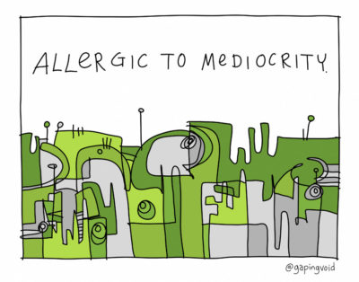

Chapter 1
I'm fascinated by mediocrity as an aspiration, understood as optimization resistance and withheld reserves. Mediocrity is slouching towards survival. Mediocrity is pragmatic resistance to totalizing thought. Mediocrity is fat in the system. Mediocrity is playful, foxy improvisation. If premature optimization is the root of all evil, mediocrity is slightly evil. Mediocrity is the courage to be ordinary. The increasingly mediocrity-hostile zeitgeist -- witness this schwag t-shirt, ht Andy Raskin -- has only made me double down. Mediocrity has been a keynote theme for me for a decade, central to bookend viral hits nearly a decade apart: The Gervais Principle (2009) and The Premium Mediocre Life of Maya Millennial (2017). In the former, I argued that Losers are self-aware minimum-effort slackers, while Sociopaths get to the top by avoiding the lure of excellence and practicing strategic incompetence on the way up. "Excellence" is for the Clueless middle. In the latter, I argued that much apparent excellence is just signaling in an economy wired to reward mediocrity with a veneer of excellence, and that this is a good thing (many perversely missed that latter point). Mediocrity makes an appearance in many personal favorites: The Return of the Barbarian, The Gollum Effect, and The Calculus of Grit (2011), Fat Thinking and Economies of Variety (2016), and the posts collected in Crash Early, Crash Often (written 2014-2017). In 2018, I began exploring it explicitly, in Survival of the Mediocre Mediocre, and Why We Slouch. Sadly, Hugh MacLeod, whose Company Hierarchy inspired The Gervais Principle, has gone dark-side with an allergic-to-mediocrity 2018 cartoon. Et tu Hugh? 😢
It's lonely where I stand, but I will continue to thought-leader humanity as we slouch towards a mediocracy utopia: a mediocratopia. A long-lived world built out of good-enough parts, including, and especially, human ones. Can we get there? Yes we can, if we stop hustling so damn much.